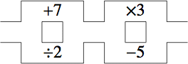

Start with the number on the left. By moving through the maze and doing any arithmetic operations on the number that you encounter, exit the maze with the result on the right. You may pass through an operation several times, but you can not make a U-turn. The results of all operations will be positive whole numbers. Each maze has several solutions, but has a unique shortest solution.
The solutions are here.
2  3
9 10
38 39
42 43
3 4
10 11
13 14
14 15
18 19
23 24
24 25
26 27
19 20
27 28
28 29
40 41